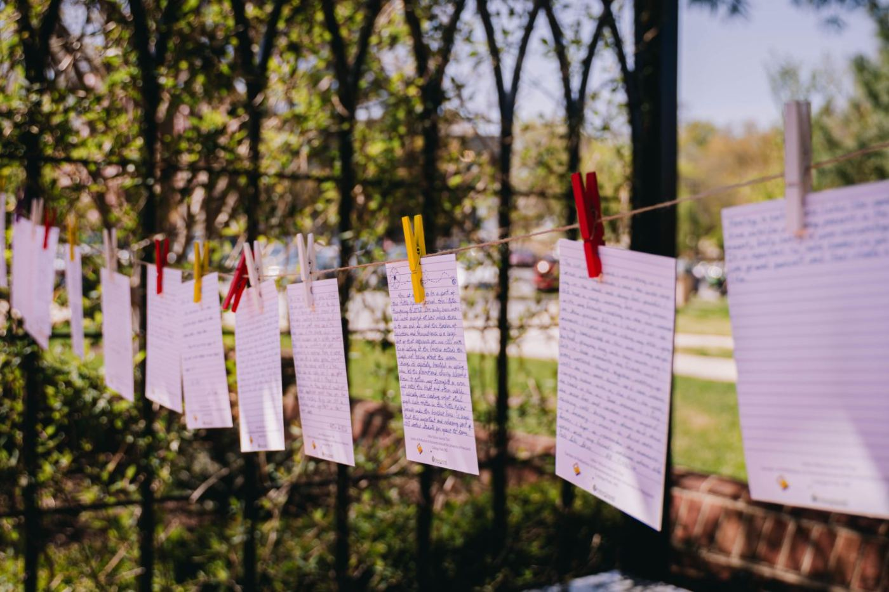

Across the Firesoul™ Network, there's a wealth of ideas, experience, and inspiration for bringing Sacred Places to life. Chances are, another Firesoul has tried something that could spark an idea for your Sacred Place. FREEsources brings some of that collective creativity together in one place. We've curated ideas from across the Network alongside ready-to-use Nature Sacred materials and other free tools we think you'll find helpful. Explore what others are doing, borrow what works, and make it your own.
Looking for something new to bring to your Sacred Place? Explore adaptable program and activity ideas inspired by what Firesouls are doing across the Network. Find inspiration, practical tips, and what you need to make an idea your own.
Explore Programming GuidesFind ready-to-use materials to help you tell your story, spread the word, and invite more people into your Sacred Place.
{{ p.label }}
When we find a free resource that could make your work easier, we'll share it here. Explore useful tools, platforms, trainings, templates, and opportunities available at no cost—from free Canva access for eligible nonprofits to resources for fundraising, communications, community engagement, and more.
Explore Free ToolsFind research, facts, talking points, and resources that help you share why nearby nature and Sacred Places matter. Use them to advocate for your Sacred Place, engage funders and partners, strengthen communications, and help others understand the value of the work you do.
Explore Nature Facts & Advocacy ToolsSome of the best ideas come from Firesouls themselves. FREEsources gives us a way to share what's working in one Sacred Place so it can inspire and support others across the Network.
Have a program, tool, template, or idea that others could use? Share it with us! It could become the next FREEsource for the Network.
Share an Idea or Resource